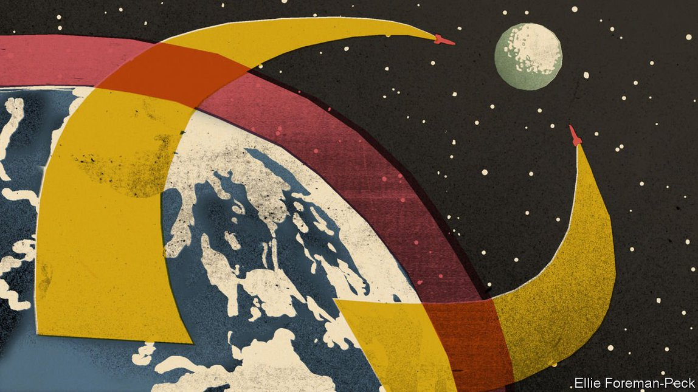
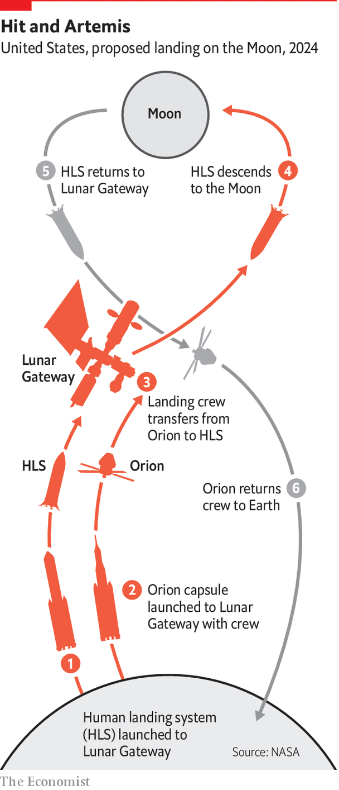
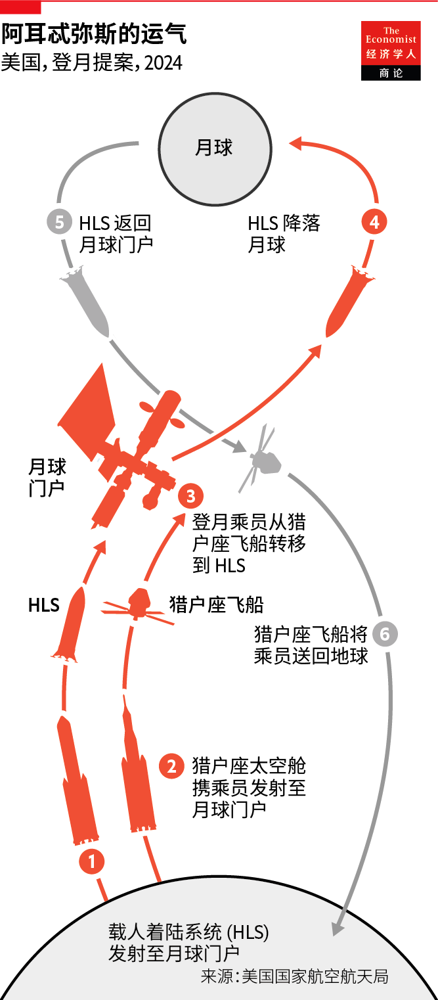
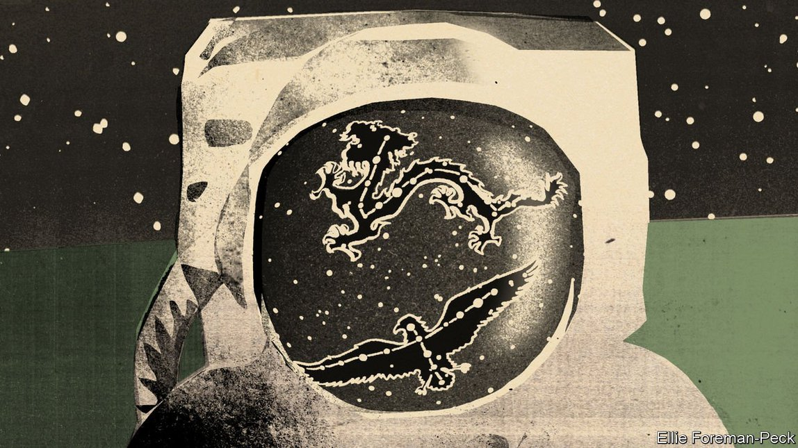
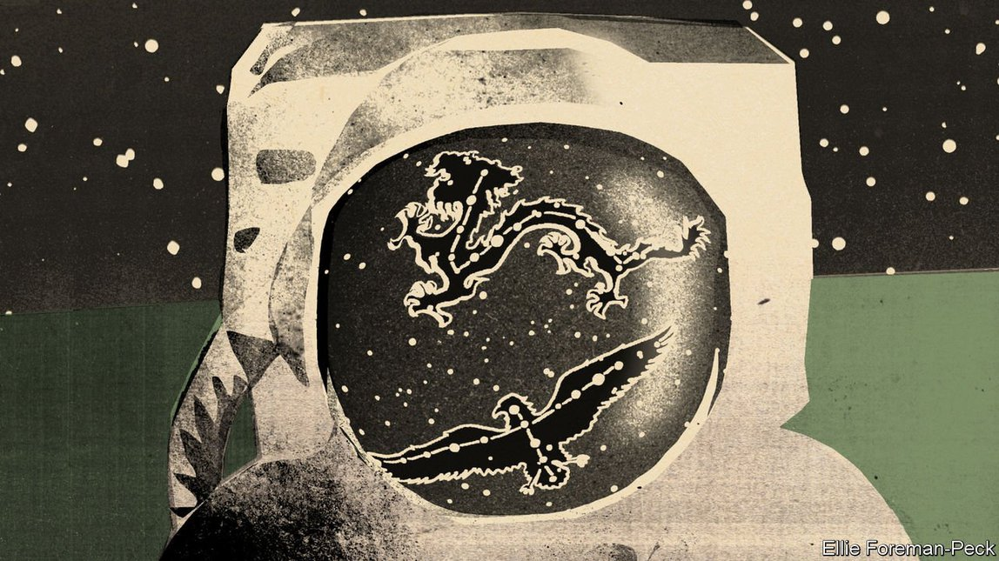

Text
2021-08-08T15:04:20+00:00
The eagle and the rabbit
鹰兔之争
鷹兔之爭
America, China and the race to the Moon
美国、中国和登月竞赛
美國、中國和登月競賽
Half a century on, the race back to the Moon looks markedly different from the first
半个世纪过去了，重返月球的竞赛看起来与第一次明显不同【深度】
半個世紀過去了，重返月球的競賽看起來與第一次明顯不同【深度】
ON JULY 11th, climbing through the darkling sky like a bolt of lightning in reverse, Richard Branson stole a whisper of Jeff Bezos’s thunder.
七月十一日，理查德·布兰森（Richard Branson）像一道反向闪电攀上黑暗的天空，抢走了杰夫·贝索斯的一点风头。
七月十一日，理查德·布蘭森（Richard Branson）像一道反向閃電攀上黑暗的天空，搶走了傑夫·貝索斯的一點風頭。
In early June Mr Bezos had garnered headlines and pageviews by announcing that when his rocket company, Blue Origin, launched a space capsule with humans on board for the first time on July 20th he would be among those passengers. Virgin Galactic, a company founded by Sir Richard, had already flown its rocket-plane Unity to the edge of space. Plans were quickly hatched to bring its next test flight forward and to put Sir Richard himself on the crew manifest (he had been planning to take a later flight). On July 11th Unity did its thing, and Sir Richard, returned to Earth, proclaimed a new space age open. Blue Origin tweeted, snarkily if accurately, that its capsule goes higher and has bigger windows.
6月初，贝索斯宣布自己将搭乘他的火箭公司蓝色起源（Blue Origin）于 7 月 20 日首次发射的载人太空舱，收获了大把头条和点击。理查德爵士创立的维珍银河（Virgin Galactic）公司此前已经将其火箭飞机 Unity 飞到了太空边缘。新计划很快就制定出来，将下一次试飞提前，并将理查德本人放在了机组人员名单上（他本来计划稍后飞行）。7 月 11 日 Unity 一举成功，理查德返回地球，宣布一个新的太空时代就此开启。蓝色起源在推特上刻薄地（也许也是准确地）表示自己的太空舱飞得更高，窗户也更大。
6月初，貝索斯宣布自己將搭乘他的火箭公司藍色起源（Blue Origin）於 7 月 20 日首次發射的載人太空艙，收穫了大把頭條和點擊。理查德爵士創立的維珍銀河（Virgin Galactic）公司此前已經將其火箭飛機 Unity 飛到了太空邊緣。新計劃很快就制定出來，將下一次試飛提前，並將理查德本人放在了機組人員名單上（他本來計劃稍後飛行）。7 月 11 日 Unity 一舉成功，理查德返回地球，宣布一個新的太空時代就此開啟。藍色起源在推特上刻薄地（也許也是準確地）表示自己的太空艙飛得更高，窗戶也更大。
If Mr Bezos has lost his precedence, he has kept his date. And that matters. July 20th is the anniversary of the first landing of a crewed spacecraft on the Moon: that of the Eagle, Apollo 11’s lunar module, in 1969. As such it was, for a long time, a date for retrospection. But now it is also a date for looking forward.
就算被抢了先，贝索斯坚守着自己的日期。这很重要。7 月 20 日是载人航天器首次登陆月球的周年纪念日：1969 年阿波罗 11 号的登月舱“鹰”登月。正因如此，在很长一段时间内这都是一个值得回顾的日子。但如今这也是一个值得期待的日子。
就算被搶了先，貝索斯堅守着自己的日期。這很重要。7 月 20 日是載人航天器首次登陸月球的周年紀念日：1969 年阿波羅 11 號的登月艙“鷹”登月。正因如此，在很長一段時間內這都是一個值得回顧的日子。但如今這也是一個值得期待的日子。
There is every reason to think that, by the time Apollo 11’s 60th anniversary rolls around at the end of this decade, American astronauts will once again be leaving footprints on the barren lunar plains. And while Sir Richard has no realistic human-spaceflight ambitions beyond tourist flights to the top of the atmosphere, Mr Bezos wants Blue Origin to play a big role in that next great adventure.
完全有理由认为，到这个十年结束，阿波罗 11 号 60 周年纪念日到来之际，美国宇航员将再次在贫瘠的月球平原上留下足迹。理查德除了飞往大气层顶端的旅游飞行之外没有现实的载人航天雄心，而贝索斯希望蓝色起源在下一次伟大冒险中发挥重要作用。
完全有理由認為，到這個十年結束，阿波羅 11 號 60 周年紀念日到來之際，美國宇航員將再次在貧瘠的月球平原上留下足跡。理查德除了飛往大氣層頂端的旅遊飛行之外沒有現實的載人航天雄心，而貝索斯希望藍色起源在下一次偉大冒險中發揮重要作用。
A place for the private initiative of Mr Bezos and those like him is one of the ways in which the plans and context for America’s return to the Moon differ from those that saw it first go there—and then stop going there—half a century ago. There are many others. One of the goals of the Artemis programme, as NASA’s back-to-the-Moon programme is known, is to highlight the ways in which America has changed in the intervening decades. Another is to be comparatively cheap. Whereas Apollo had to be a uniquely American achievement, Artemis will encourage the participation of allies. And rather than providing just a few brief visits, Artemis is meant to lead to the creation of permanent outposts.
容许贝索斯等人采取个人行动，正是美国重返月球与半个世纪前的登月（然后又停止登月）在计划和背景方面的区别之一。还有很多其他的不同。美国国家航空航天局（NASA）重返月球的计划叫做“阿耳忒弥斯计划”（Artemis），其目标之一就是凸显美国在这几十年间发生的变化。另一个目标是让探月变得更便宜。虽然阿波罗必须是美国独一无二的成就，但阿耳忒弥斯将鼓励盟友的参与。此外，阿耳忒弥斯不仅仅是做几次短期探访，而是希望最终创建永久性基地。
容許貝索斯等人採取個人行動，正是美國重返月球與半個世紀前的登月（然後又停止登月）在計劃和背景方面的區別之一。還有很多其他的不同。美國國家航空航天局（NASA）重返月球的計劃叫做“阿耳忒彌斯計劃”（Artemis），其目標之一就是凸顯美國在這幾十年間發生的變化。另一個目標是讓探月變得更便宜。雖然阿波羅必須是美國獨一無二的成就，但阿耳忒彌斯將鼓勵盟友的參與。此外，阿耳忒彌斯不僅僅是做幾次短期探訪，而是希望最終創建永久性基地。
One thing remains the same. Artemis, like Apollo, is shaped by the geopolitics of great-power rivalry—then between America and the Soviet Union, now between America and China. Even here, though, there are crucial differences. In the 1960s America was in a race, the outcome of which could not be known. Today it is the reigning champion, seeking merely to maintain its pre-eminence. But the question in the minds of the spectators is strikingly similar. Does the American system work better than the alternative when faced with the challenges of the future?
有一件事没有变。和阿波罗计划一样，阿耳忒弥斯计划也受到大国竞争的地缘政治支配——过去是美国和苏联之间，现在是美国和中国之间。然而，即使在这里也有着关键的差异。在 1960 年代，美国处于一场结果无法预知的竞赛之中。如今它是卫冕冠军，只是寻求保持其卓越地位。但观众心中的问题却惊人地相似。在面对未来的挑战时，美国体制是否比其他方案更有效？
有一件事沒有變。和阿波羅計劃一樣，阿耳忒彌斯計劃也受到大國競爭的地緣政治支配——過去是美國和蘇聯之間，現在是美國和中國之間。然而，即使在這裡也有着關鍵的差異。在 1960 年代，美國處於一場結果無法預知的競賽之中。如今它是衛冕冠軍，只是尋求保持其卓越地位。但觀眾心中的問題卻驚人地相似。在面對未來的挑戰時，美國體制是否比其他方案更有效？
In the 1960s America started off on the back foot. The Soviet Union had launched the first satellite into space in 1957 and the first human in 1961. If the space race was to get into orbit, and thereby demonstrate both your remarkable technological prowess and your ability to drop a nuclear weapon onto any point on the Earth, the Soviet Union had already won. Part of the genius of Apollo was to redefine the race as being one to the Moon.
在 1960 年代，美国起步晚了。苏联于 1957 年发射了第一颗卫星，1961 年则首次将人类送入太空。如果太空竞赛的目标是要进入轨道，从而展示非凡的技术实力和将核武器投放到地球任何地点的能力，苏联已经赢了。阿波罗的部分天才之处在于把这场竞赛的目标变成了登月。
在 1960 年代，美國起步晚了。蘇聯於 1957 年發射了第一顆衛星，1961 年則首次將人類送入太空。如果太空競賽的目標是要進入軌道，從而展示非凡的技術實力和將核武器投放到地球任何地點的能力，蘇聯已經贏了。阿波羅的部分天才之處在於把這場競賽的目標變成了登月。
The fact that getting to the Moon requires a very large launcher meant that the more limited technology which had allowed the Soviet Union to take the lead in Earth orbit no longer counted for much. Both sides needed a fundamentally new capability. It was America which, through a remarkable and extremely costly effort, successfully built that capability in the form of the Saturn V.
登月需要一个非常大的发射台，这意味着让苏联在地球轨道上处于领先地位的较为受限的技术没太大意义了。双方都需要一种全新的能力。美国通过一项非凡且极其昂贵的努力，成功地以土星五号（Saturn V）的形式建立了这种能力。
登月需要一個非常大的發射台，這意味着讓蘇聯在地球軌道上處於領先地位的較為受限的技術沒太大意義了。雙方都需要一種全新的能力。美國通過一項非凡且極其昂貴的努力，成功地以土星五號（Saturn V）的形式建立了這種能力。
When, at the beginning of that great drama, President John F. Kennedy told Congress that America’s eagerness to go into space was “not governed by the efforts of others” he was being less than candid; the Soviet Union’s efforts were fundamental to the programme’s rationale. One of the differences between that era of lunar rivalry and this one, though, is that China seems to be living up to Kennedy’s ideal. It is not trying to leapfrog ahead of America as America tried to overtake the Soviet Union. It is trying to build a similar set of capabilities—and thus catch up to some extent—and to meet its own national needs, whether defined in military and economic terms or, more nebulously, in terms of prestige.
在那场大戏开场时，约翰·肯尼迪总统告诉国会，美国进入太空的渴望“不受他人努力的支配”。他不够坦率：苏联的进展是驱动这项计划的根本原因。不过，那个月球竞争时代与当今时代的一个区别在于，如今的中国似乎正在实现肯尼迪的这种理想。它并不像美国试图超越苏联那样试图超越美国。它想要建立一套类似的能力——从而在一定程度上迎头赶上——并满足自己的国家需求，无论是军事上、经济上的需求，还是在更模糊的声望方面的需求。
在那場大戲開場時，約翰·肯尼迪總統告訴國會，美國進入太空的渴望“不受他人努力的支配”。他不夠坦率：蘇聯的進展是驅動這項計劃的根本原因。不過，那個月球競爭時代與當今時代的一個區別在於，如今的中國似乎正在實現肯尼迪的這種理想。它並不像美國試圖超越蘇聯那樣試圖超越美國。它想要建立一套類似的能力——從而在一定程度上迎頭趕上——並滿足自己的國家需求，無論是軍事上、經濟上的需求，還是在更模糊的聲望方面的需求。
China is capable of routinely launching satellites of all sizes which it uses for its own communications, reconnaissance and intelligence services and also makes available to third countries. Last year it completed a satellite navigation system, Beidou, that is a global rival to the GPS system which America originally fielded in the 1980s, and to the more recent Glonass and Galileo systems developed by Russia and Europe, respectively.
中国有能力定期发射各种尺寸的卫星，用于本国的通信、侦察和情报服务，也提供给第三国。去年它建成了北斗卫星导航系统，成为美国最初在 1980 年代部署的 GPS 系统以及后来俄罗斯和欧洲分别开发的格洛纳斯和伽利略系统的全球竞争对手。
中國有能力定期發射各種尺寸的衛星，用於本國的通信、偵察和情報服務，也提供給第三國。去年它建成了北斗衛星導航系統，成為美國最初在 1980 年代部署的 GPS 系統以及後來俄羅斯和歐洲分別開發的格洛納斯和伽利略系統的全球競爭對手。
The rover that China landed on Mars in May was much smaller and less capable than the most recent rovers America has sent there. But no other country has yet managed such a feat at all. Nor has anyone else landed a rover—called Yutu-2, after the rabbit who lives on the Moon in Chinese folklore—on the far side of the Moon. The modular space station that China is currently assembling in low Earth orbit is much more modest than the International Space Station (ISS) on which America, Canada, Europe, Japan and Russia have collaborated. But it is a more ambitious undertaking than any of those powers other than America or Russia could field alone. Xi Jinping, China’s president, certainly seemed proud when he had a videocall with the “taikonauts” on board.
中国 5 月登陆火星的漫游车比美国最近派往那里的漫游车要小得多，能力也差一些。但还没有其他国家完成这样的壮举。也没有其他国家的月球车登陆月球背面——这个月球车以中国民间传说中生活在月球上的兔子命名，叫“玉兔二号”。中国目前在低地球轨道上组装的模块化空间站比美国、加拿大、欧洲、日本和俄罗斯合作建造的国际空间站（ISS）要小得多。但这项任务比美国或俄罗斯以外的任何国家能单独开展的任务都更宏伟。当中国国家主席习近平与机上的“太空员”视频通话时，神情无疑是自豪的。
中國 5 月登陸火星的漫遊車比美國最近派往那裡的漫遊車要小得多，能力也差一些。但還沒有其他國家完成這樣的壯舉。也沒有其他國家的月球車登陸月球背面——這個月球車以中國民間傳說中生活在月球上的兔子命名，叫“玉兔二號”。中國目前在低地球軌道上組裝的模塊化空間站比美國、加拿大、歐洲、日本和俄羅斯合作建造的國際空間站（ISS）要小得多。但這項任務比美國或俄羅斯以外的任何國家能單獨開展的任務都更宏偉。當中國國家主席習近平與機上的“太空員”視頻通話時，神情無疑是自豪的。
My spaceship knows which way to go
我的宇宙飞船知道该去何方
我的宇宙飛船知道該去何方
And China has started developing big boosters, rockets similar in size to the Saturn V. Officials in the Chinese space programme have said that when there is a working version, probably in the early 2030s, it will be used to put people on the Moon; recently the Chinese and Russian space agencies announced that they would work together towards such a goal. Again, this is a matter of catching up. The difference is that this time China is recreating a capability which America has let lapse.
而且中国已经开始研制大型助推器，这些火箭将和土星五号差不多大小。中国航天计划的官员曾经说过，当有了一个能够工作的版本——可能在2030年代初——它会被用来把人送上月球；近日，中俄航天机构宣布将联手朝着这一目标迈进。这又是一次追赶。不同的是，这一次中国正在重建一种美国已经放弃的能力。
而且中國已經開始研製大型助推器，這些火箭將和土星五號差不多大小。中國航天計劃的官員曾經說過，當有了一個能夠工作的版本——可能在2030年代初——它會被用來把人送上月球；近日，中俄航天機構宣布將聯手朝着這一目標邁進。這又是一次追趕。不同的是，這一次中國正在重建一種美國已經放棄的能力。
Recreating a capability is not the same as running in a race, much less winning one. But for China it is just one stage in a longer drawn-out strategy which would see it eclipse America as the leading power in space sometime in the 2040s through a mixture of its own perseverance and America’s decline. China would be headed for the Moon even if America was not; it will go there even if, as seems likely, America gets back there well beforehand. China’s leaders seem to see a presence on the Moon as having a meaning which goes well beyond beating an adversary to a largely arbitrary finish line. There are things that great nations do which small nations cannot; there are types of grandeur reserved for nations which embody ancient civilisations of global import. China’s leaders think their country must be seen to share in all such perquisites. A presence beyond the Earth is one of them.
复制一种能力并不意味着参加竞赛，更不用说赢得竞赛了。但对中国来说，这只是它较长期战略的一个阶段：它要在 2040 年代的某个时刻，通过自身的毅力和美国的衰落，超越美国成为太空领导者。即使美国不登月，中国也会登月；哪怕美国很可能比它早很多年再次登月，中国也一样要登月。中国领导人似乎认为登月的意义远不止在一个基本上是随便画下的终点线上击败对手。有些事，大国能做而小国不能；有一些荣耀，只有蕴含对全球举足轻重的古代文明的国家才配拥有。中国领导人认为，他们的国家必须在所有这类特权中占有一席之地。地球之外的足迹就是其中之一。
複製一種能力並不意味着參加競賽，更不用說贏得競賽了。但對中國來說，這只是它較長期戰略的一個階段：它要在 2040 年代的某個時刻，通過自身的毅力和美國的衰落，超越美國成為太空領導者。即使美國不登月，中國也會登月；哪怕美國很可能比它早很多年再次登月，中國也一樣要登月。中國領導人似乎認為登月的意義遠不止在一個基本上是隨便畫下的終點線上擊敗對手。有些事，大國能做而小國不能；有一些榮耀，只有蘊含對全球舉足輕重的古代文明的國家才配擁有。中國領導人認為，他們的國家必須在所有這類特權中佔有一席之地。地球之外的足跡就是其中之一。
A truly confident America might look at these ambitions in the context of its own achievements half a century ago, say “been there, done that” and move on. Today’s America lacks such composure. For China to land on the Moon in the absence of an active American presence there would be a public-opinion disaster.
一个真正自信的美国可能会把这些雄心比照自己半个世纪前取得的成就，说“我去过，我做过”，然后置之不理。今天的美国缺乏这样的冷静。如果中国在没有美国积极参与的情况下登陆月球，将会引发舆论灾难。
一個真正自信的美國可能會把這些雄心比照自己半個世紀前取得的成就，說“我去過，我做過”，然後置之不理。今天的美國缺乏這樣的冷靜。如果中國在沒有美國積极參与的情況下登陸月球，將會引發輿論災難。
When making the case for the Artemis programme in May, Bill Nelson, the NASA administrator, brandished a picture of China’s Mars rover at the House appropriations committee. “They’re going to be landing humans on the Moon. That should tell us something about our need to get off our duff and get our Human Landing System programme going vigorously.”
在 5 月份为阿耳忒弥斯计划辩护时，NASA 局长比尔·纳尔逊（Bill Nelson）在众议院拨款委员会面前挥舞着一张中国火星探测器的照片。“他们将把人类送上月球。这应该让我们明白自己需要起来干活，让我们的载人着陆系统计划大力推进。”
在 5 月份為阿耳忒彌斯計劃辯護時，NASA 局長比爾·納爾遜（Bill Nelson）在眾議院撥款委員會面前揮舞着一張中國火星探測器的照片。“他們將把人類送上月球。這應該讓我們明白自己需要起來幹活，讓我們的載人着陸系統計劃大力推進。”
Beating China is a simple and popular proposition. The Artemis programme as drawn up under Mr Trump has been embraced by Mr Biden’s administration and seems to enjoy solid bipartisan backing in Congress. It is an approach to making America great again which is hard to oppose in principle, even if it is not everyone’s priority.
打败中国是一个简单而流行的命题。在特朗普的领导下制定的阿耳忒弥斯计划已被拜登的政府接受，并且似乎在国会得到了两党的坚定支持。这是一条让美国再次伟大的路径，原则上很难反对，即使它不是每个人的优先事项。
打敗中國是一個簡單而流行的命題。在特朗普的領導下制定的阿耳忒彌斯計劃已被拜登的政府接受，並且似乎在國會得到了兩黨的堅定支持。這是一條讓美國再次偉大的路徑，原則上很難反對，即使它不是每個人的優先事項。
The new administration has yet to face up publicly to the fact that it will not meet the original goal of boots on the Moon by the end of 2024 (which would have been the end of Mr Trump’s second term). But it seems highly likely that it will manage it sometime before the end of Mr Biden’s second term, should he serve one. As long as the programme remains on course to succeed before China gets off the pad, a little delay is unlikely to badly affect support.
新政府之后将会公开面对一个事实，即无法实现在 2024 年前（原本将是在特朗普第二个任期结束时）登月的最初目标。但它看起来非常有可能在拜登第二个任期结束前的某个时间达成——如果他连任的话。只要这个项目依然计划抢在中国发射之前取得成功，一点点延迟不大会对支持率造成严重影响。
新政府之後將會公開面對一個事實，即無法實現在 2024 年前（原本將是在特朗普第二個任期結束時）登月的最初目標。但它看起來非常有可能在拜登第二個任期結束前的某個時間達成——如果他連任的話。只要這個項目依然計劃搶在中國發射之前取得成功，一點點延遲不大會對支持率造成嚴重影響。
Artemis also serves other political goals. The Americans put on the Moon by Apollo were all white men. This did not go unnoticed at the time; one of the most enduring works by Gil Scott-Heron, a black poet and musician, begins “A rat done bit my sister Nell (with Whitey on the Moon)”. Much has recently been done to publicise the contribution that women and people of colour made to the programme behind the scenes—this year NASA’s Washington, DC headquarters building was renamed in honour of Mary W. Jackson, the agency’s first black female engineer. Their role in today’s space programme is routinely celebrated. Wally Funk, a campaigning aviator who met all the criteria for being an astronaut in the 1960s save for her sex, will be a spacefaring guest of Mr Bezos’s on July 20th. Artemis, named after Apollo’s sister, is to be the means by which women and non-whites first reach the Moon.
阿耳忒弥斯计划还为其他政治目标服务。通过阿波罗计划登上月球的美国人都是白人。这在当时并不是没人注意到；黑人诗人和音乐家吉尔·斯科特-赫伦（Gil Scott-Heron）最经久不衰的作品之一的开头就是“一只老鼠咬了我的妹妹内尔（而白鬼却在月球上）”。最近有很多工作来宣传女性和有色人种在幕后对该计划的贡献——今年 NASA 华盛顿特区总部大楼更名为玛丽·W.杰克逊（Mary W. Jackson）大楼，以纪念该机构的第一位黑人女工程师。她们在当今太空计划中的作用经常得到表彰。飞行员沃利·芬克（Wally Funk）正在领导一场运动，她在1960 年代符合宇航员除性别外的所有标准。她将于 7 月 20 日加入贝索斯的太空旅游。以阿波罗的妹妹命名的阿耳忒弥斯计划将让女性和非白人首次登上月球。
阿耳忒彌斯計劃還為其他政治目標服務。通過阿波羅計劃登上月球的美國人都是白人。這在當時並不是沒人注意到；黑人詩人和音樂家吉爾·斯科特-赫倫（Gil Scott-Heron）最經久不衰的作品之一的開頭就是“一隻老鼠咬了我的妹妹內爾（而白鬼卻在月球上）”。最近有很多工作來宣傳女性和有色人種在幕後對該計劃的貢獻——今年 NASA 華盛頓特區總部大樓更名為瑪麗·W.傑克遜（Mary W. Jackson）大樓，以紀念該機構的第一位黑人女工程師。她們在當今太空計劃中的作用經常得到表彰。飛行員沃利·芬克（Wally Funk）正在領導一場運動，她在1960 年代符合宇航員除性別外的所有標準。她將於 7 月 20 日加入貝索斯的太空旅遊。以阿波羅的妹妹命名的阿耳忒彌斯計劃將讓女性和非白人首次登上月球。
Giant steps are what you take
步子要大
步子要大
What is more, it has the advantage of being comparatively cheap. For Apollo NASA had to create not just the Saturn V but also the command and lunar modules which it hurled aloft; the total cost is put at around $300bn in today’s dollars. Then, though, the size and expense of the task were not an insuperable obstacle; indeed, they were part of the point. The project was a signal of just how much America was willing to stake on technological pre-eminence.
更重要的是，它具有相对便宜的优势。对于阿波罗计划，NASA 不仅要制造土星五号，还要制造它带往太空的指挥舱和登月舱。以今天的美元计算，总成本约为 3000 亿美元。不过，在那时，这项任务的规模和费用并不是不可逾越的障碍，事实上它们恰恰是重点的一部分。该项目是一个信号，表明美国愿意为取得技术上的显赫地位下极大的赌注。
更重要的是，它具有相對便宜的優勢。對於阿波羅計劃，NASA 不僅要製造土星五號，還要製造它帶往太空的指揮艙和登月艙。以今天的美元計算，總成本約為 3000 億美元。不過，在那時，這項任務的規模和費用並不是不可逾越的障礙，事實上它們恰恰是重點的一部分。該項目是一個信號，表明美國願意為取得技術上的顯赫地位下極大的賭注。
Having to expend similar amounts to recreate an old capability would not send a similar message. Fortunately, it is not necessary. A new NASA rocket with Saturn V-like capabilities, the Space Launch System (SLS), is already close to completing its development, as is a new long-duration crew capsule, Orion, that can ride on top of it. NASA also had pre-existing plans for a small space station, now known as Lunar Gateway, which would orbit in the Moon’s vicinity. At its simplest, all Artemis requires beyond what is already in development is a system for getting people in an Orion orbiting in the vicinity of the Moon down to the surface and back up again (see diagram).
要花费类似的金额来重新建立一项古老的能力不会传达类似的信息。幸运的是，也不需要这样。具有类似土星五号能力的 NASA 新型火箭太空发射系统（SLS）已近开发完毕，而可以搭载其上的新型长效乘员舱猎户座（Orion）飞船也是如此。NASA 此前已有一个小型空间站的计划，现在被称为“月球门户”，它将在月球附近运行。最简单地说，除了已经在开发的东西之外，阿耳忒弥斯计划所需要的只是一个系统，可以让在月球附近环绕的猎户座飞船上的人下降到月球表面再返回飞船（见图）。
要花費類似的金額來重新建立一項古老的能力不會傳達類似的信息。幸運的是，也不需要這樣。具有類似土星五號能力的 NASA 新型火箭太空發射系統（SLS）已近開發完畢，而可以搭載其上的新型長效乘員艙獵戶座（Orion）飛船也是如此。NASA 此前已有一個小型空間站的計劃，現在被稱為“月球門戶”，它將在月球附近運行。最簡單地說，除了已經在開發的東西之外，阿耳忒彌斯計劃所需要的只是一個系統，可以讓在月球附近環繞的獵戶座飛船上的人下降到月球表面再返回飛船（見圖）。
For NASA to develop such a landing system itself would still be a pricey undertaking. But the space agency’s greatest achievement over the past decade has been demonstrating that it does not have to develop its spacecraft itself. After the last space shuttles were retired, NASA asked private companies to submit proposals for new spacecraft to get first cargo and then crews up to the ISS. Various companies won contracts under these schemes, most notably SpaceX, the rocket company founded by Elon Musk.
对于 NASA 来说，要自行开发这样的着陆系统仍然是一项昂贵的任务。但该局在过去十年中最大的成就是证明它不必自己开发航天器。在最后一批航天飞机退役后，NASA要求私营公司提交新航天器的提案，以便先运送货物，然后再将机组人员送上国际空间站。许多公司都在这些计划中赢得了合同，最著名的是伊隆·马斯克创立的火箭公司 SpaceX。
對於 NASA 來說，要自行開發這樣的着陸系統仍然是一項昂貴的任務。但該局在過去十年中最大的成就是證明它不必自己開發航天器。在最後一批航天飛機退役後，NASA要求私營公司提交新航天器的提案，以便先運送貨物，然後再將機組人員送上國際空間站。許多公司都在這些計劃中贏得了合同，最著名的是伊隆·馬斯克創立的火箭公司 SpaceX。
Grants, milestone payments made when particular goals were achieved and the promise of long-term contracts once the vehicles were up to scratch allowed SpaceX to develop the Crew Dragon spacecraft, now used to ferry astronauts up to the ISS. The overall cost to NASA of developing the Crew Dragon this way was $3.1bn: that is only a little more than the total cost of the most recent Mars rover mission.
拨款、在实现特定目标时支付的里程碑付款以及一旦运载工具达到标准就签订长期合同的承诺，使 SpaceX 得以开发现在用于将宇航员运送到国际空间站的“载人龙飞船”。NASA 以这种方式开发载人龙飞船的总成本为 31 亿美元，这仅比最近一次火星探测器任务的总成本多一点。
撥款、在實現特定目標時支付的里程碑付款以及一旦運載工具達到標準就簽訂長期合同的承諾，使 SpaceX 得以開發現在用於將宇航員運送到國際空間站的“載人龍飛船”。NASA 以這種方式開發載人龍飛船的總成本為 31 億美元，這僅比最近一次火星探測器任務的總成本多一點。
It’s lonely out in space
在太空很孤独
在太空很孤獨
During the Trump administration NASA decided that Artemis should take the same approach to developing its Human Landing System (HLS). Three proposals survived the first round of bidding last year: one from a “national team” led by Blue Origin, one from a consortium led by Dynetics, an American aerospace and computing contractor, and one from SpaceX. It was expected that two of the three would receive contracts to build systems, just as Boeing and SpaceX had both received contracts to develop capsules to take crew to the space station (Boeing has yet to fly a crew in its capsule, but will undertake a crewless test flight later this month).
在特朗普执政期间，NASA 决定阿耳忒弥斯计划应该采用相同的方法来开发其载人着陆系统（HLS）。三项提案通过了去年的第一轮竞标：一项来自蓝色起源领导的“国家团队”，一项来自美国航空航天和计算承包商 Dynetics 牵头的财团，一项来自 SpaceX。预计三者中的两个将获得建造系统的合同，就像波音和 SpaceX 都获得了开发太空舱以将机组人员送往空间站的合同（波音尚未在其太空舱中搭载人员，但在7月晚些时候进行了一次无人驾驶试飞）。
在特朗普執政期間，NASA 決定阿耳忒彌斯計劃應該採用相同的方法來開發其載人着陸系統（HLS）。三項提案通過了去年的第一輪競標：一項來自藍色起源領導的“國家團隊”，一項來自美國航空航天和計算承包商 Dynetics 牽頭的財團，一項來自 SpaceX。預計三者中的兩個將獲得建造系統的合同，就像波音和 SpaceX 都獲得了開發太空艙以將機組人員送往空間站的合同（波音尚未在其太空艙中搭載人員，但在7月晚些時候進行了一次無人駕駛試飛）。
On April 16th, though, NASA awarded a single contract worth $2.9bn to SpaceX, saying it lacked the money to offer two. Both Blue Origin and Dynetics challenged the award, which is now being reviewed by the Government Accountability Office; its findings are expected on or before August 4th. Maria Cantwell, a senator from Blue Origin’s home state of Washington, subsequently sponsored an amendment to the bill authorising NASA’s budget which requires the agency to issue a second HLS contract. The bill has passed the Senate, but as yet has no counterpart in the House.
不过，4 月 16 日，NASA 将一份价值 29 亿美元的合同独独授予了 SpaceX，它称自己资金不足，无法给出两份合同。蓝色起源和 Dynetics 均对这一决定提出质疑，目前该决定正由政府问责办公室审查，调查结果预计在 8 月 4 日或之前发布。来自蓝色起源的家乡华盛顿州的参议员玛丽亚 ·坎特韦尔（Maria Cantwell）随后发起了一项对 NASA 预算授权法案的修正案，要求该机构签发第二份HLS合同。该法案已在参议院通过，但在众议院尚无对应法案。
不過，4 月 16 日，NASA 將一份價值 29 億美元的合同獨獨授予了 SpaceX，它稱自己資金不足，無法給出兩份合同。藍色起源和 Dynetics 均對這一決定提出質疑，目前該決定正由政府問責辦公室審查，調查結果預計在 8 月 4 日或之前發布。來自藍色起源的家鄉華盛頓州的參議員瑪麗亞 ·坎特韋爾（Maria Cantwell）隨後發起了一項對 NASA 預算授權法案的修正案，要求該機構簽發第二份HLS合同。該法案已在參議院通過，但在眾議院尚無對應法案。
 
This will probably lead to delays. But the competitive approach is the right one. When NASA builds its own spacecraft prices go sky high, not least because politicians like to see federal money spent in their home states. The SLS is a case in point. Its development costs, now sunk, have been enormous; it is far too expensive for frequent flights. A private company could have done the job much better—as SpaceX is showing with the development of its Starship launch system, similar in capacity to the SLS but much more technically ambitious. Its “Raptor” engines are of an advanced design that no one has previously managed to make practical. It is intended to be entirely reusable.
这可能会导致延误。但引入竞争是对的。当 NASA 建造自己的航天器时，价格飞涨，尤其是因为政客们喜欢看到联邦资金花在自己的家乡。SLS 就是一个很好的例子。它（现在已经沉没）的开发成本十分巨大。对于频繁的航天飞行来说它太贵了。交让一家私营公司去做这件事本可以好得多，正如 SpaceX 开发的“星舰”发射系统所展示的那样——它的容量与 SLS 相似，但技术上的雄心要大得多。它的“猛禽”发动机采用了一种先进的设计，以前没有人能够将其付诸实践。它旨在完全可回收再用。
這可能會導致延誤。但引入競爭是對的。當 NASA 建造自己的航天器時，價格飛漲，尤其是因為政客們喜歡看到聯邦資金花在自己的家鄉。SLS 就是一個很好的例子。它（現在已經沉沒）的開發成本十分巨大。對於頻繁的航天飛行來說它太貴了。交讓一家私營公司去做這件事本可以好得多，正如 SpaceX 開發的“星艦”發射系統所展示的那樣——它的容量與 SLS 相似，但技術上的雄心要大得多。它的“猛禽”發動機採用了一種先進的設計，以前沒有人能夠將其付諸實踐。它旨在完全可回收再用。
Prototypes of the sleek, stainless-steel-hulled Starship have been launching, landing and sometimes exploding at SpaceX’s plant in Texas for months as the company tests their new engines and their ability to change their orientation in mid-air. The next test flight will be the most ambitious yet. It will see the first use of a “Super Heavy” booster to launch a Starship almost into orbit (it will in fact come down about 6,000km away in the ocean off Hawaii). The 33 Raptors on the Super Heavy will generate twice as much thrust as the first stage of a Saturn V did. The eventual goal is for the Super Heavies, like the first stages of SpaceX’s Falcon boosters, to return and make a vertical landing after sending their Starships into orbit. There the Starships will either launch satellites and return to Earth or wait for a subsequent launch to refuel them before heading off to more distant destinations.
几个月来，SpaceX公司一直在测试“星舰”的新发动机及其在半空中变向的能力。光滑铮亮的不锈钢外壳“星舰”原型机在公司位于得克萨斯州的工厂发射、着陆，有时甚至爆炸。下一次试飞将是迄今为止最具野心的一次。它将首次使用“超重型”助推器将“星舰”发射到几乎进入轨道的位置（实际上它将在坠落到6000公里外夏威夷附近的海洋中）。“超重型”助推器上的 33 个“猛禽”产生的推力是土星五号第一级产生的推力的两倍。最终的目标是让“超重型”像 SpaceX 的猎鹰助推器的第一级那样，在将“星舰”送入轨道后，自行返回并垂直着陆。进入轨道后的“星舰”要么发射卫星并返回地球，要么等待随后的发射为它们添加燃料，然后前往更遥远的目的地。
幾個月來，SpaceX公司一直在測試“星艦”的新發動機及其在半空中變向的能力。光滑錚亮的不鏽鋼外殼“星艦”原型機在公司位於得克薩斯州的工廠發射、着陸，有時甚至爆炸。下一次試飛將是迄今為止最具野心的一次。它將首次使用“超重型”助推器將“星艦”發射到幾乎進入軌道的位置（實際上它將在墜落到6000公里外夏威夷附近的海洋中）。“超重型”助推器上的 33 個“猛禽”產生的推力是土星五號第一級產生的推力的兩倍。最終的目標是讓“超重型”像 SpaceX 的獵鷹助推器的第一級那樣，在將“星艦”送入軌道後，自行返回並垂直着陸。進入軌道後的“星艦”要麼發射衛星並返回地球，要麼等待隨後的發射為它們添加燃料，然後前往更遙遠的目的地。
The SpaceX HLS Moon lander is a version of such a Starship, and NASA’s selection of it over its competitors is a vote of confidence in the company’s scheme. If it comes to fruition, it will outcompete the SLS by more or less every measure save the employment of government contractors.
SpaceX HLS 月球着陆器就是这样一艘“星舰”的一个版本，NASA 选择它而不是它的竞争对手就是对这家公司的计划投下了信任票。如果它实现了，它在差不多每一项指标上都会胜过 SLS，政府承包商的就业除外。
SpaceX HLS 月球着陸器就是這樣一艘“星艦”的一個版本，NASA 選擇它而不是它的競爭對手就是對這家公司的計劃投下了信任票。如果它實現了，它在差不多每一項指標上都會勝過 SLS，政府承包商的就業除外。
Blue Origin’s plans for a booster far larger than the petard with which Mr Bezos will hoist himself next week are not yet as far along. But Mr Bezos has money and determination, as well as friends in Washington. America could have three boosters capable of supporting human missions to the Moon, two private and one public, before China has even one.
蓝色起源计划中的助推器远比贝索斯下周把自己送上天的那颗大得多，但目前进展有限。但贝索斯有钱有决心，还有在华盛顿的朋友。美国可能会拥有三个能够支持载人登月任务的助推器，两个私人的，一个国营的，而届时中国甚至可能一个都还没有。
藍色起源計劃中的助推器遠比貝索斯下周把自己送上天的那顆大得多，但目前進展有限。但貝索斯有錢有決心，還有在華盛頓的朋友。美國可能會擁有三個能夠支持載人登月任務的助推器，兩個私人的，一個國營的，而屆時中國甚至可能一個都還沒有。
It is in such possibilities that the real promise of Artemis lies. The Chinese Moon programme is entirely a creature of government. Although there is a nascent private space sector in the country, it is not yet capable of anything so ambitious. (Nor is it entirely clear that the government is; the engines a booster big enough for Moon duty requires are far more sophisticated than anything it has yet built.) In this, China’s programme will resemble in form, if not in scale, America’s huge, centralised Apollo programme. One of the great ironies of the first space race was that at the peak of its efforts to stop the Moon from turning communist America was devoting more than 4% of government spending to a 400,000-worker planned economy entirely run by government officials.
阿耳忒弥斯计划的真正希望就在于这种可能性。中国月球计划完全是政府的产物。尽管该国也有新兴的私营航天部门，但它还没有能力实现如此宏伟的事业。（政府能不能做到也不完全清楚；一个能够完成登月的助推器需要的发动机比它建造过的任何东西都要复杂得多。）在这方面，中国的计划在形式上（如果不是在规模上）将类似于美国庞大的、集中的阿波罗计划。第一次太空竞赛的一大讽刺是，在美国阻止月球变成共产主义世界的努力达到顶峰时，它将超过 4% 的政府支出用在了一项完全由政府官员运营的、雇有 40 万工人的计划经济上。
阿耳忒彌斯計劃的真正希望就在於這種可能性。中國月球計劃完全是政府的產物。儘管該國也有新興的私營航天部門，但它還沒有能力實現如此宏偉的事業。（政府能不能做到也不完全清楚；一個能夠完成登月的助推器需要的發動機比它建造過的任何東西都要複雜得多。）在這方面，中國的計劃在形式上（如果不是在規模上）將類似於美國龐大的、集中的阿波羅計劃。第一次太空競賽的一大諷刺是，在美國阻止月球變成共產主義世界的努力達到頂峰時，它將超過 4% 的政府支出用在了一項完全由政府官員運營的、雇有 40 萬工人的計劃經濟上。
The stars look very different today
今天的星星大不同
今天的星星大不同
This time round, it is possible that America will instead get to the Moon by supporting the aspirations of brilliant and determined—if sometimes petty—entrepreneurs and harnessing the capabilities they provide. It promises to be a more effective mode of exploration. It could also be the beginning of something more. While Mr Musk dreams of his Starships taking settlers to Mars, Mr Bezos talks of using resources from the Moon to build new industries in space (such as power-generation, asteroid mining or the production of exotic new materials). It is a vision shared by Chinese space enthusiasts such as Lieutenant-General Zhang Yulin, who works in a part of the People’s Liberation Army devoted to space- and cyber-operations. Its realisation, should it come to pass, may offer a truly dramatic answer to the question of which system can better respond to the challenges of the future. ■
这一次，美国有可能通过支持才华横溢且意志坚定（有时甚至是执拗小气）的企业家的抱负并利用他们提供的能力来登上月球。这有望成为一种更有效的探索模式，也可能是更大成就的发端。马斯克梦想着他的“星舰”将定居者带到火星，而贝索斯则谈到利用月球资源在太空中建立新的产业（例如发电、小行星采矿或奇异新材料的生产）。这同样也是中国太空爱好者的愿景，例如在中国人民解放军致力于太空战和网络战的单位工作的张育林中将。它的实现（如果能够实现的话），可能会为哪种体制能够更好地应对未来挑战的问题提供真正戏剧性的答案。
這一次，美國有可能通過支持才華橫溢且意志堅定（有時甚至是執拗小氣）的企業家的抱負並利用他們提供的能力來登上月球。這有望成為一種更有效的探索模式，也可能是更大成就的發端。馬斯克夢想着他的“星艦”將定居者帶到火星，而貝索斯則談到利用月球資源在太空中建立新的產業（例如發電、小行星採礦或奇異新材料的生產）。這同樣也是中國太空愛好者的願景，例如在中國人民解放軍致力於太空戰和網絡戰的單位工作的張育林中將。它的實現（如果能夠實現的話），可能會為哪種體制能夠更好地應對未來挑戰的問題提供真正戲劇性的答案。